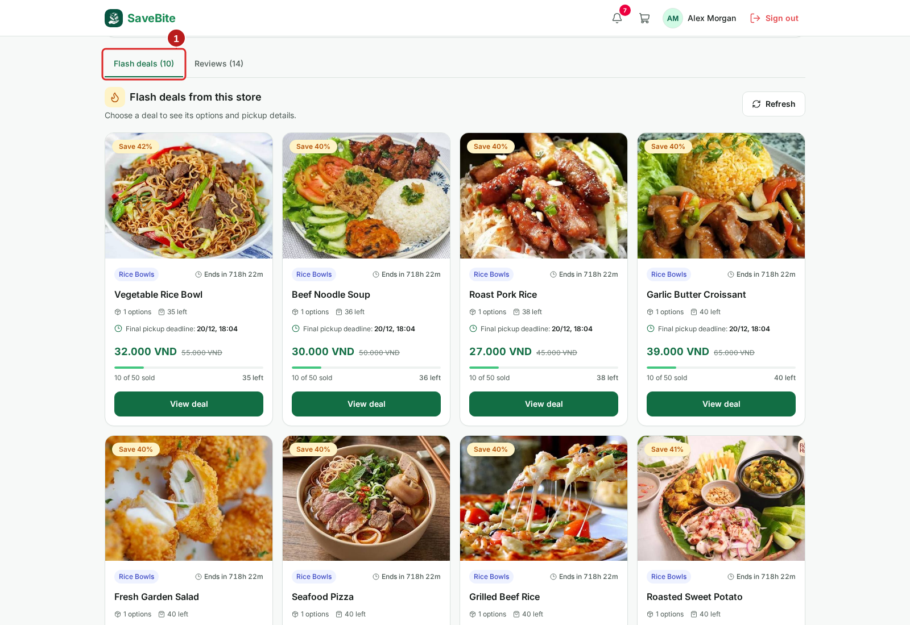
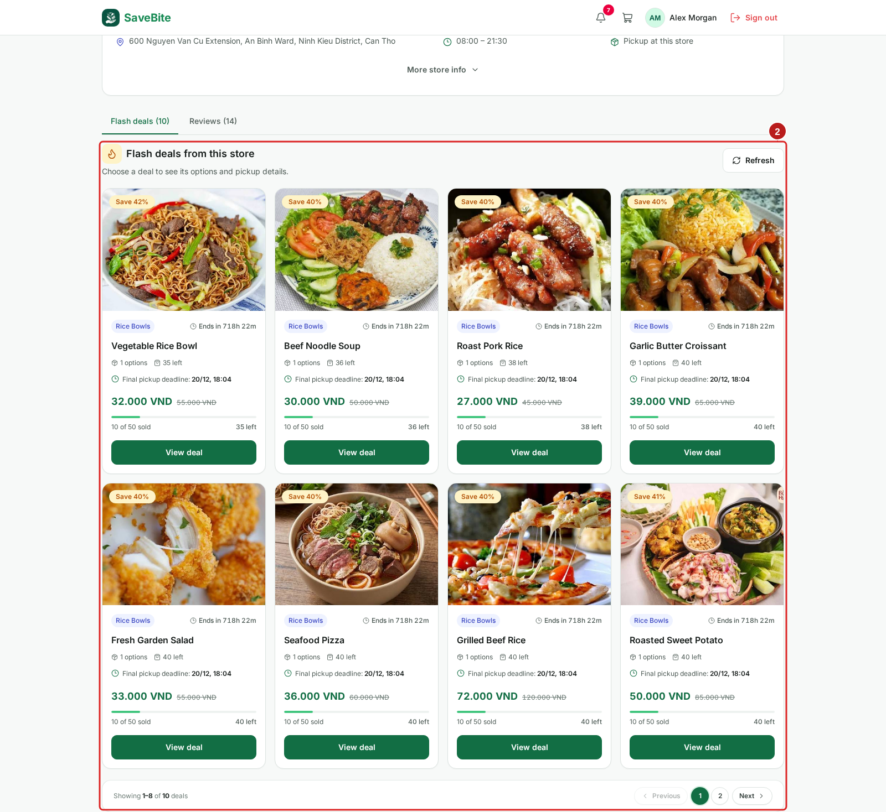
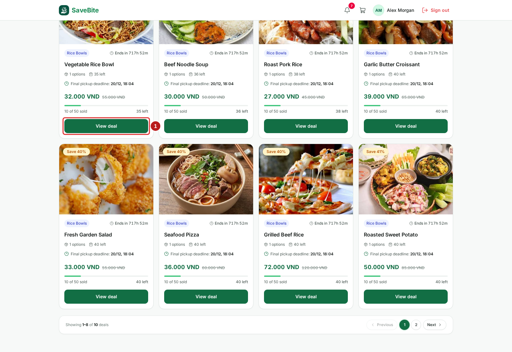
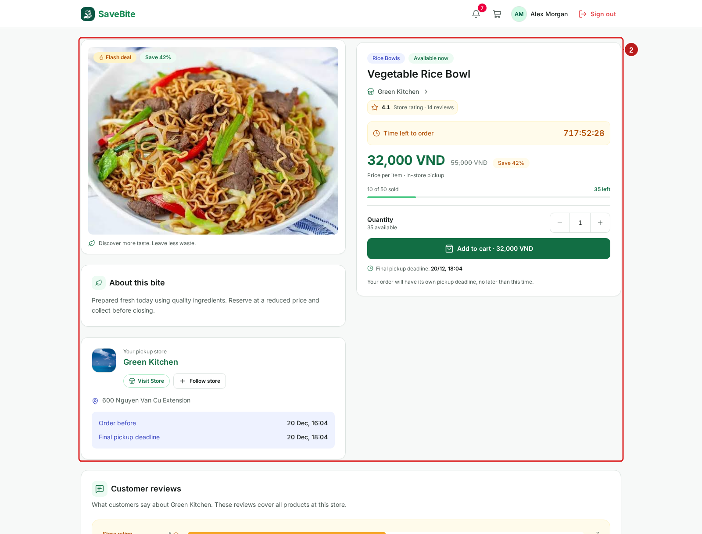

SaveBite — UC-001 to UC-100
Documentation environment: isolated demo database, local email inbox and uploads, simulated payment provider and payment credential verification, and deterministic demo travel estimates. These captures do not demonstrate a live payment provider or real email delivery.
Each use case presents all its screenshots first, followed immediately by its flow description. The numbered instructions match the markers in the images.
Local demo · Captured 20/11/2026, 23:22:43 (UTC+7) · Each image captures a single screen or UI state; the viewport may be taller to include complete forms and details.
UC-003 — Verify Password Reset
Actor: Guest
Preconditions: The authentication page is available.
- Check your email address. (Image 1, marker 1)
- Enter the password reset code from your email. (Image 1, marker 2)
- Submit the code to reset your password. (Image 1, marker 3)
Verification: passed. The flow was performed in the running documentation environment.
UC-005 — Verify Registration
Actor: Guest
Preconditions: The authentication page is available.
- Check your email address. (Image 1, marker 1)
- Enter the verification code from your email. (Image 1, marker 2)
- Submit the code to verify your registration. (Image 1, marker 3)
Verification: passed. The flow was performed in the running documentation environment.
UC-006 — View Nearby Stores
Actor: Customer
Preconditions: You are signed in with an active customer account and the required demo records are available.
- Click Explore nearby stores to open the nearby store browser. (Image 1, marker 1)
- Select a nearby shop on the map. The badge shows its active flash deal count. (Image 2, marker 2)
- Select a shop marker to review its information and active flash deal count. (Image 3, marker 3)
- Browse the loaded flash deal cards below the map to review prices, availability, and pickup deadlines. (Image 3, marker 4)
Verification: passed. The flow was performed in the running documentation environment.
UC-007 — View Store Profile
Actor: Customer
Preconditions: You are signed in with an active customer account and the required demo records are available.
- Click the store name in the nearby store list to open its profile. (Image 1, marker 1)
- Review the store name, address, opening hours, ratings, and other store information. (Image 2, marker 2)
Verification: passed. The flow was performed in the running documentation environment.
UC-008 — View Store’s Flash Deals
Image 1. Open the store deals

One screen or UI state per image · /shops/00000000-0000-0000-0000-000000000022Image 2. Available store deals

One screen or UI state per image · /shops/00000000-0000-0000-0000-000000000022Read the flow description for UC-008UC-008 — View Store’s Flash Deals
Actor: Customer
Preconditions: You are signed in with an active customer account and the required demo records are available.
- Select the Flash deals tab. (Image 1, marker 1)
- Browse all deals displayed in the store’s deal list, including their prices, stock, and pickup deadlines. Open a deal for more information. (Image 2, marker 2)
Verification: passed. The flow was performed in the running documentation environment.
UC-009 — View Store Reviews
Actor: Customer
Preconditions: You are signed in with an active customer account and the required demo records are available.
- Select the Reviews tab. (Image 1, marker 1)
- Review the average store rating, total review count, and rating breakdown. (Image 2, marker 2)
- Review the customer rating, comment, photos, and store reply. (Image 2, marker 3)
Verification: passed. The flow was performed in the running documentation environment.
UC-010 — View Flash Deals By Current Location
Actor: Customer
Preconditions: You are signed in with an active customer account and the required demo records are available.
- Click Use my location and allow browser location access. (Image 1, marker 1)
- Use the category, distance, and price filters to refine nearby deals. (Image 2, marker 2)
- Browse the matching flash deals and review their prices, availability, and pickup deadlines. (Image 2, marker 3)
Verification: passed. The flow was performed in the running documentation environment.
UC-011 — View Flash Deal Details
Image 1. Choose a flash deal

One screen or UI state per image · /shops/00000000-0000-0000-0000-000000000022Image 2. Flash deal details

One screen or UI state per image · /flash-deals/f1000000-0000-0000-0000-000000000201Read the flow description for UC-011UC-011 — View Flash Deal Details
Actor: Customer
Preconditions: You are signed in with an active customer account and the required demo records are available.
- Click View deal for the deal you want to inspect. (Image 1, marker 1)
- Review the product photos, description, available options, price, stock, pickup deadline, and pickup store information. (Image 2, marker 2)
Verification: passed. The flow was performed in the running documentation environment.
UC-012 — Logout
Actor: Customer
Preconditions: You are signed in with an active customer account and the required records are available.
- Click Sign out to end your session. (Image 1, marker 1)
Verification: passed. The flow was performed in the running documentation environment.
UC-014 — View Profile
Image 1. Open your profile
 One screen or UI state per image · /
One screen or UI state per image · /Image 2. Your profile
One screen or UI state per image · /account/profileRead the flow description for UC-014UC-014 — View Profile
Actor: Customer
Preconditions: You are signed in with an active customer account and the required demo records are available.
- Click your profile avatar to open your account profile. (Image 1, marker 1)
- Review your personal information and account status. (Image 2, marker 2)
Verification: passed. The flow was performed in the running documentation environment.
UC-016 — Update Avatar
Actor: Customer
Preconditions: You are signed in with an active customer account and the required demo records are available.
- Click the camera icon and select an image for your avatar. (Image 1, marker 1)
- Click Save changes to upload your selected avatar. (Image 2, marker 2)
- Confirm that your new avatar appears on your profile. (Image 3, marker 3)
Verification: passed. The flow was performed in the running documentation environment.
UC-017 — View Addresses
Actor: Customer
Preconditions: You are signed in with an active customer account and the required demo records are available.
- Review your saved addresses and identify the default address. (Image 1, marker 1)
Verification: passed. The flow was performed in the running documentation environment.
UC-018 — Add New Address
Actor: Customer
Preconditions: You are signed in with an active customer account and the required demo records are available.
- Click Add new address. (Image 1, marker 1)
- Click Use my location and allow location access to fill your address details automatically. (Image 2, marker 2)
- Review or enter your address label, street address, local area details, and coordinates. (Image 2, marker 3)
- Click Save address to save your address. (Image 2, marker 4)
Verification: passed. The flow was performed in the running documentation environment.
UC-019 — Update Address
Actor: Customer
Preconditions: You are signed in with an active customer account and the required demo records are available.
- Click Edit for the address you want to update. (Image 1, marker 1)
- Click Use my location and allow location access to update your address details automatically. (Image 2, marker 2)
- Review or update your address label, street address, local area details, and coordinates. (Image 2, marker 3)
- Click Save changes to save the updated address. (Image 2, marker 4)
Verification: passed. The flow was performed in the running documentation environment.
UC-020 — Delete Address
Actor: Customer
Preconditions: You are signed in with an active customer account and the required demo records are available.
- Click Delete for the saved address you no longer need. (Image 1, marker 1)
- Review the confirmation popup and click Delete address to confirm. (Image 2, marker 2)
- Confirm that the deleted address no longer appears. (Image 3, marker 3)
Verification: passed. The flow was performed in the running documentation environment.
UC-021 — Set Default Address
Actor: Customer
Preconditions: You are signed in with an active customer account and the required records are available.
- Click Set default for the address you want to use by default. (Image 1, marker 1)
- Confirm that the selected address is marked Default. (Image 2, marker 2)
Verification: passed. The flow was performed in the running documentation environment.
UC-022 — View Notifications
Actor: Customer
Preconditions: You are signed in with an active customer account and the required records are available.
- Review your notifications and switch between All and Unread as needed. (Image 1, marker 1)
Verification: passed. The flow was performed in the running documentation environment.
UC-023 — Mark Notification as Read
Actor: Customer
Preconditions: You are signed in with an active customer account and the required records are available.
- Click Mark as read on an unread notification. (Image 1, marker 1)
- Confirm that the notification is now read and the unread count decreases. (Image 2, marker 2)
Verification: passed. The flow was performed in the running documentation environment.
UC-024 — Delete Notification
Actor: Customer
Preconditions: You are signed in with an active customer account and the required records are available.
- Click Delete notification on the notification you want to remove. (Image 1, marker 1)
- Confirm that the notification no longer appears. (Image 2, marker 2)
Verification: passed. The flow was performed in the running documentation environment.
UC-025 — Mark All Notifications as Read
Actor: Customer
Preconditions: You are signed in with an active customer account and the required records are available.
- Click Mark all read to mark all your notifications as read. (Image 1, marker 1)
- Confirm that no unread notifications remain. (Image 2, marker 2)
Verification: passed. The flow was performed in the running documentation environment.
UC-026 — View Items in Cart
Actor: Customer
Preconditions: You are signed in with an active customer account and the required demo records are available.
- Click the cart icon in the header. (Image 1, marker 1)
- Review the items, quantities, prices, and totals grouped by store. (Image 2, marker 2)
Verification: passed. The flow was performed in the running documentation environment.
UC-027 — Update Item Quantity
Actor: Customer
Preconditions: You are signed in with an active customer account and the required demo records are available.
- Use the quantity controls to change the number of items. (Image 1, marker 1)
- Confirm the updated item quantity. (Image 2, marker 2)
- Review the updated checkout totals. (Image 2, marker 3)
Verification: passed. The flow was performed in the running documentation environment.
UC-028 — Remove Item from Cart
Actor: Customer
Preconditions: You are signed in with an active customer account and the required records are available.
- Click Remove for the item you want to remove. (Image 1, marker 1)
- Confirm that the selected item is removed and the totals are updated. (Image 2, marker 2)
Verification: passed. The flow was performed in the running documentation environment.
UC-029 — Add Flash Deal to Cart
Image 1. Choose quantity and add to cart
One screen or UI state per image · /flash-deals/f1000000-0000-0000-0000-000000000201Read the flow description for UC-029UC-029 — Add Flash Deal to Cart
Actor: Customer
Preconditions: You are signed in with an active customer account and the required demo records are available.
- Choose the number of items to purchase. (Image 1, marker 1)
- Click Add to cart to add the selected quantity. (Image 1, marker 2)
Verification: passed. The flow was performed in the running documentation environment.
UC-030 — Checkout Order
Image 1. Start checkout
One screen or UI state per image · /cartImage 2. Estimate your pickup route
One screen or UI state per image · /checkoutImage 3. Review and place your order
One screen or UI state per image · /checkoutRead the flow description for UC-030UC-030 — Checkout Order
Actor: Customer
Preconditions: You are signed in with an active customer account and the required records are available.
- Click Checkout for the store you want to order from. (Image 1, marker 1)
- Click Get my GPS location and allow browser location access. (Image 2, marker 2)
- Review the items, total, payment method, and pickup deadlines. (Image 3, marker 3)
- Click Place order to submit your order. (Image 3, marker 4)
Verification: passed. The flow was performed in the running documentation environment.
UC-031 — Payment
Image 1. Review and confirm your payment
One screen or UI state per image · /account/payments/e81c28cb-6516-4950-9f34-364261cd2047Image 2. Payment recorded
One screen or UI state per image · /orders/c702fd50-da03-47f2-9bbf-283b76b1b2e6Read the flow description for UC-031UC-031 — Payment
Actor: Customer
Preconditions: You are signed in with an active customer account and the required records are available.
- Review the payment amount and deadline. This documentation environment uses a simulated payment provider. (Image 1, marker 1)
- Complete the payment with your payment provider. In this demo, click Confirm test payment. (Image 1, marker 2)
- Confirm that the payment is recorded as paid. (Image 2, marker 3)
Verification: passed. The flow was performed in the running documentation environment.
UC-032 — View Order History
Actor: Customer
Preconditions: You are signed in with an active customer account and the required demo records are available.
- Click Orders in the account navigation. (Image 1, marker 1)
- Review the records in the list. (Image 1, marker 2)
Verification: passed. The flow was performed in the running documentation environment.
UC-033 — View Order Details
Image 1. Open an order
One screen or UI state per image · /account/ordersImage 2. Complete order information
One screen or UI state per image · /orders/7af4eb29-4ffe-450e-b379-0fc7041ecb8aRead the flow description for UC-033UC-033 — View Order Details
Actor: Customer
Preconditions: You are signed in with an active customer account and the required demo records are available.
- Click View details for the order you want to inspect. (Image 1, marker 1)
- Review the full order information, purchased items, pickup details, and payment totals. (Image 2, marker 2)
Verification: passed. The flow was performed in the running documentation environment.
UC-034 — Cancel Order
Image 1. Cancel your order
One screen or UI state per image · /orders/c702fd50-da03-47f2-9bbf-283b76b1b2e6Image 2. Confirm cancellation
One screen or UI state per image · /orders/c702fd50-da03-47f2-9bbf-283b76b1b2e6Image 3. Order cancellation result
One screen or UI state per image · /orders/c702fd50-da03-47f2-9bbf-283b76b1b2e6Read the flow description for UC-034UC-034 — Cancel Order
Actor: Customer
Preconditions: You are signed in with an active customer account and the required records are available.
- Click Cancel order while the order is still eligible for cancellation. (Image 1, marker 1)
- Enter a cancellation reason if requested and confirm the cancellation. (Image 2, marker 2)
- Confirm that the order status changes to Cancelled. (Image 3, marker 3)
Verification: passed. The flow was performed in the running documentation environment.
UC-035 — View Customer Payment History
Actor: Customer
Preconditions: You are signed in with an active customer account and the required demo records are available.
- Click Payments in the account navigation. (Image 1, marker 1)
- Choose a payment status filter. (Image 1, marker 2)
- Review the records in the list. (Image 1, marker 3)
Verification: passed. The flow was performed in the running documentation environment.
UC-036 — View Payment Details
Image 1. Choose a payment
One screen or UI state per image · /account/paymentsImage 2. Payment details
One screen or UI state per image · /account/payments/98ae65dc-0594-4a85-b465-c6fb327eb45fRead the flow description for UC-036UC-036 — View Payment Details
Actor: Customer
Preconditions: You are signed in with an active customer account and the required demo records are available.
- Click View details for the payment you want to inspect. (Image 1, marker 1)
- Review the payment status, collected amount, related order, and purchased items. (Image 2, marker 2)
Verification: passed. The flow was performed in the running documentation environment.
UC-037 — View Refund History
Actor: Customer
Preconditions: You are signed in with an active customer account and the required demo records are available.
- Click Refunds in the account navigation. (Image 1, marker 1)
- Review the records in the list. (Image 1, marker 2)
Verification: passed. The flow was performed in the running documentation environment.
UC-038 — Request Refund
Image 1. Request a refund
One screen or UI state per image · /orders/c0500000-0000-0000-0001-000000000011Image 2. Provide refund request details
One screen or UI state per image · /orders/c0500000-0000-0000-0001-000000000011/refund-requestRead the flow description for UC-038UC-038 — Request Refund
Actor: Customer
Preconditions: You are signed in with an active customer account and the required demo records are available.
- Click Request a refund for an eligible completed order. (Image 1, marker 1)
- Select the product you want to refund. (Image 2, marker 2)
- Choose the refund quantity. (Image 2, marker 3)
- Describe the issue with the product. (Image 2, marker 4)
- Choose supporting photos for the selected product. (Image 2, marker 5)
- Click Submit refund request. (Image 2, marker 6)
Verification: passed. The flow was performed in the running documentation environment.
UC-039 — Provide Bank Information
Image 1. Provide your refund bank account
One screen or UI state per image · /account/refunds/92e48995-26a9-4473-a493-fcb0b544e71eRead the flow description for UC-039UC-039 — Provide Bank Information
Actor: Customer
Preconditions: You are signed in with an active customer account and the required records are available.
- Select your bank. (Image 1, marker 1)
- Enter your bank account number. (Image 1, marker 2)
- Enter the account holder name. (Image 1, marker 3)
- Click Send confirmation email to request a verification code. (Image 1, marker 4)
Verification: passed. The flow was performed in the running documentation environment.
UC-040 — Confirm Refund via Email
Image 1. Confirm your refund destination
One screen or UI state per image · /account/refunds/92e48995-26a9-4473-a493-fcb0b544e71eImage 2. Verified refund destination
One screen or UI state per image · /account/refunds/92e48995-26a9-4473-a493-fcb0b544e71eRead the flow description for UC-040UC-040 — Confirm Refund via Email
Actor: Customer
Preconditions: You are signed in with an active customer account and the required records are available.
- Enter the verification code sent to your email. (Image 1, marker 1)
- Click Confirm destination to verify your bank information. (Image 1, marker 2)
- Confirm that your bank information is verified and the request is ready for shop review. (Image 2, marker 3)
Verification: passed. The flow was performed in the running documentation environment.
UC-041 — Withdraw Refund Request
Image 1. Withdraw your request
One screen or UI state per image · /account/refunds/92e48995-26a9-4473-a493-fcb0b544e71eImage 2. Confirm withdrawal
One screen or UI state per image · /account/refunds/92e48995-26a9-4473-a493-fcb0b544e71eImage 3. Request withdrawn
One screen or UI state per image · /account/refunds/92e48995-26a9-4473-a493-fcb0b544e71eRead the flow description for UC-041UC-041 — Withdraw Refund Request
Actor: Customer
Preconditions: You are signed in with an active customer account and the required records are available.
- Click Withdraw request if you no longer want to continue. (Image 1, marker 1)
- Confirm the withdrawal. You cannot create another refund request for the same order. (Image 2, marker 2)
- Confirm that the refund request is marked Withdrawn. (Image 3, marker 3)
Verification: passed. The flow was performed in the running documentation environment.
UC-042 — View Refund Details
Image 1. Choose a refund
One screen or UI state per image · /account/refundsImage 2. Refund details
One screen or UI state per image · /account/refunds/92e48995-26a9-4473-a493-fcb0b544e71eRead the flow description for UC-042UC-042 — View Refund Details
Actor: Customer
Preconditions: You are signed in with an active customer account and the required demo records are available.
- Click View refund details for the refund you want to inspect. (Image 1, marker 1)
- Review the refund status, affected items, requested amount, destination, and history. (Image 2, marker 2)
Verification: passed. The flow was performed in the running documentation environment.
UC-043 — Add Feedback
Image 1. Rate a purchased item
One screen or UI state per image · /orders/c0500000-0000-0000-0001-000000000012Image 2. Write your feedback
One screen or UI state per image · /orders/c0500000-0000-0000-0001-000000000012Read the flow description for UC-043UC-043 — Add Feedback
Actor: Customer
Preconditions: You are signed in with an active customer account and the required demo records are available.
- Click Rate this item for an eligible completed purchase. (Image 1, marker 1)
- Choose your star rating. (Image 2, marker 2)
- Enter your feedback. (Image 2, marker 3)
- Choose photos to attach to your feedback. (Image 2, marker 4)
- Submit your feedback. (Image 2, marker 5)
Verification: passed. The flow was performed in the running documentation environment.
UC-044 — View Feedback History
Actor: Customer
Preconditions: You are signed in with an active customer account and the required demo records are available.
- Click Reviews in the account navigation. (Image 1, marker 1)
- Review the records in the list. (Image 1, marker 2)
Verification: passed. The flow was performed in the running documentation environment.
UC-045 — Edit Feedback
Image 1. Edit your feedback
One screen or UI state per image · /account/reviewsImage 2. Update your feedback
One screen or UI state per image · /account/reviewsRead the flow description for UC-045UC-045 — Edit Feedback
Actor: Customer
Preconditions: You are signed in with an active customer account and the required demo records are available.
- Click Edit review for the feedback you want to update. (Image 1, marker 1)
- Choose your star rating. (Image 2, marker 2)
- Enter your feedback. (Image 2, marker 3)
- Choose photos to attach to your feedback. (Image 2, marker 4)
- Save your updated feedback. (Image 2, marker 5)
Verification: passed. The flow was performed in the running documentation environment.
UC-046 — Delete Feedback
Image 1. Delete your feedback
One screen or UI state per image · /account/reviewsImage 2. Confirm deletion
One screen or UI state per image · /account/reviewsRead the flow description for UC-046UC-046 — Delete Feedback
Actor: Customer
Preconditions: You are signed in with an active customer account and the required demo records are available.
- Click Delete for the feedback you want to remove. (Image 1, marker 1)
- Confirm that you want to delete the selected feedback. (Image 2, marker 2)
Verification: passed. The flow was performed in the running documentation environment.
UC-047 — View Trust Score and Level
Actor: Customer
Preconditions: You are signed in with an active customer account and the required demo records are available.
- Click Trust Score & Level in the account navigation. (Image 1, marker 1)
- Select the Overview tab. (Image 1, marker 2)
- Review your current membership level, trust score, and account standing. (Image 1, marker 3)
- Review the benefits of your current level. (Image 1, marker 4)
Verification: passed. The flow was performed in the running documentation environment.
UC-048 — Track Level Progress
Actor: Customer
Preconditions: You are signed in with an active customer account and the required demo records are available.
- Click Trust Score & Level in the account navigation. (Image 1, marker 1)
- Select the Overview tab. (Image 1, marker 2)
- Review your progress and the requirements for the next level. (Image 1, marker 3)
Verification: passed. The flow was performed in the running documentation environment.
UC-049 — View Trust Score History
Actor: Customer
Preconditions: You are signed in with an active customer account and the required demo records are available.
- Click Trust Score & Level in the account navigation. (Image 1, marker 1)
- Select the Score & value history tab. (Image 1, marker 2)
- Review the history of your trust score and accumulated order value. (Image 1, marker 3)
Verification: passed. The flow was performed in the running documentation environment.
UC-050 — View Level Info & Benefits
Actor: Customer
Preconditions: You are signed in with an active customer account and the required demo records are available.
- Click Trust Score & Level in the account navigation. (Image 1, marker 1)
- Select the Levels & benefits tab. (Image 1, marker 2)
- Review the requirements and benefits of the first two membership levels. (Image 1, marker 3)
Verification: passed. The flow was performed in the running documentation environment.
UC-051 — View Penalty History
Actor: Customer
Preconditions: You are signed in with an active customer account and the required demo records are available.
- Click Trust Score & Level in the navigation. (Image 1, marker 1)
- Select the Penalties tab. (Image 1, marker 2)
- Review the records in the list. (Image 1, marker 3)
Verification: passed. The flow was performed in the running documentation environment.
UC-052 — Track Penalty Recovery Progress
Image 1. Open penalty recovery
One screen or UI state per image · /account/trust-score/penaltiesImage 2. Penalty recovery progress
One screen or UI state per image · /account/trust-score/penaltiesRead the flow description for UC-052UC-052 — Track Penalty Recovery Progress
Actor: Customer
Preconditions: You are signed in with an active customer account and the required demo records are available.
- Click View recovery for the penalty you want to inspect. (Image 1, marker 1)
- Review the recovery requirements, completed orders, and remaining progress. (Image 2, marker 2)
Verification: passed. The flow was performed in the running documentation environment.
UC-053 — Register Shop
Image 1. Start a shop application
One screen or UI state per image · /account/shop-applicationImage 2. Enter shop information
One screen or UI state per image · /account/shop-application/newImage 3. Choose shop images
One screen or UI state per image · /account/shop-application/newImage 4. Locate your shop and review its address
One screen or UI state per image · /account/shop-application/newImage 5. Set opening hours
One screen or UI state per image · /account/shop-application/newImage 6. Add supporting documents
One screen or UI state per image · /account/shop-application/newImage 7. Attach the food safety certificate
One screen or UI state per image · /account/shop-application/newImage 8. Verify payment credentials and submit your application
One screen or UI state per image · /account/shop-application/newRead the flow description for UC-053UC-053 — Register Shop
Actor: Customer
Preconditions: You are signed in with the required role and the demo records for this flow are available.
- Click Start application to register your shop. (Image 1, marker 1)
- Enter your shop name. (Image 2, marker 2)
- Enter your business license number. (Image 2, marker 3)
- Describe your shop and the products it offers. (Image 2, marker 4)
- Choose a cover image for your shop. (Image 3, marker 5)
- Choose your shop logo. (Image 3, marker 6)
- Click Use current location and allow location access in your browser. (Image 4, marker 7)
- Drag the location pin on the map to the exact position of your shop. (Image 4, marker 8)
- Review the detected street address, ward, district, and city after adjusting the pin. (Image 4, marker 9)
- Set your opening and closing times. (Image 5, marker 10)
- Choose the document type. (Image 6, marker 11)
- Choose the supporting document to upload. (Image 6, marker 12)
- Select the food safety certificate document type. (Image 7, marker 13)
- Choose the food safety certificate to attach. (Image 7, marker 14)
- Enter your payment provider client ID, or keep the saved configuration when editing. (Image 8, marker 15)
- Enter your payment provider API key. (Image 8, marker 16)
- Enter your payment provider checksum key. (Image 8, marker 17)
- Click Verify PayOS credentials and wait for successful verification. (Image 8, marker 18)
- Click Submit application to send your shop registration for review. (Image 8, marker 19)
Verification: passed. The flow was performed in the running documentation environment.
UC-054 — View Shop Registration Status
Actor: Customer
Preconditions: You are signed in with the required role and the demo records for this flow are available.
- Click Shop Application in the account navigation. (Image 1, marker 1)
- Review your application status, submitted information, and review progress. (Image 1, marker 2)
Verification: passed. The flow was performed in the running documentation environment.
UC-055 — Edit and Resubmit Shop Registration
Image 1. Edit an application that needs revision
One screen or UI state per image · /account/shop-applicationImage 2. Update the requested shop information
One screen or UI state per image · /account/shop-application/edit/e1000000-0000-0000-0002-000000000002Image 3. Attach the food safety certificate
One screen or UI state per image · /account/shop-application/edit/e1000000-0000-0000-0002-000000000002Image 4. Verify payment credentials
One screen or UI state per image · /account/shop-application/edit/e1000000-0000-0000-0002-000000000002Image 5. Resubmit your application
One screen or UI state per image · /account/shop-application/edit/e1000000-0000-0000-0002-000000000002Read the flow description for UC-055UC-055 — Edit and Resubmit Shop Registration
Actor: Customer
Preconditions: You are signed in with the required role and the demo records for this flow are available.
- Review the feedback and click Edit and resubmit. (Image 1, marker 1)
- Check and update your shop name. (Image 2, marker 2)
- Update the information requested by the reviewer. (Image 2, marker 3)
- Select the food safety certificate document type. (Image 3, marker 4)
- Choose the food safety certificate to attach. (Image 3, marker 5)
- Enter your payment provider client ID, or keep the saved configuration when editing. (Image 4, marker 6)
- Enter your payment provider API key. (Image 4, marker 7)
- Enter your payment provider checksum key. (Image 4, marker 8)
- Click Verify PayOS credentials. (Image 4, marker 9)
- Click Save and resubmit to send the revised application for review. (Image 5, marker 10)
Result: The submitted application is displayed as Under review.
Verification: passed. The flow was performed in the running documentation environment.
UC-056 — Cancel Shop Registration
Image 1. Cancel a pending application
One screen or UI state per image · /account/shop-applicationImage 2. Confirm application cancellation
One screen or UI state per image · /account/shop-applicationRead the flow description for UC-056UC-056 — Cancel Shop Registration
Actor: Customer
Preconditions: You are signed in with an active customer account and the required demo records are available.
- Click Cancel application for your pending registration. (Image 1, marker 1)
- Confirm that you want to cancel the application. (Image 2, marker 2)
Verification: passed. The flow was performed in the running documentation environment.
UC-057 — View Received Staff Invitations
Actor: Customer
Preconditions: You are signed in with an active customer account and the required demo records are available.
- Click Staff Invitations in the navigation. (Image 1, marker 1)
- Review the records in the list. (Image 1, marker 2)
Verification: passed. The flow was performed in the running documentation environment.
UC-058 — Accept Staff Invitation
Image 1. Accept a staff invitation
One screen or UI state per image · /account/staff-invitationsImage 2. Updated invitation status
One screen or UI state per image · /account/staff-invitationsRead the flow description for UC-058UC-058 — Accept Staff Invitation
Actor: Customer
Preconditions: You are signed in with an active customer account and the required demo records are available.
- Click Accept to join the selected shop as a staff member. (Image 1, marker 1)
- Review the complete details and available actions. (Image 2, marker 2)
Verification: passed. The flow was performed in the running documentation environment.
UC-059 — Decline Staff Invitation
Image 1. Decline a staff invitation
One screen or UI state per image · /account/staff-invitationsImage 2. Updated invitation status
One screen or UI state per image · /account/staff-invitationsRead the flow description for UC-059UC-059 — Decline Staff Invitation
Actor: Customer
Preconditions: You are signed in with an active customer account and the required demo records are available.
- Click Decline for the invitation you do not want to accept. (Image 1, marker 1)
- Review the complete details and available actions. (Image 2, marker 2)
Verification: passed. The flow was performed in the running documentation environment.
UC-060 — Follow Shop
Actor: Customer
Preconditions: You are signed in with an active customer account and the required demo records are available.
- Click Follow store to follow the shop. (Image 1, marker 1)
Verification: passed. The flow was performed in the running documentation environment.
UC-061 — Unfollow Shop
Actor: Customer
Preconditions: You are signed in with an active customer account and the required demo records are available.
- Click Unfollow store to stop following this shop. (Image 1, marker 1)
Verification: passed. The flow was performed in the running documentation environment.
UC-062 — Manage Shop Notification Settings
Image 1. Change shop deal notifications
One screen or UI state per image · /shops/00000000-0000-0000-0000-000000000022Read the flow description for UC-062UC-062 — Manage Shop Notification Settings
Actor: Customer
Preconditions: You are signed in with an active customer account and the required demo records are available.
- Click the notification icon to turn deal notifications on or off for this shop. (Image 1, marker 1)
Verification: passed. The flow was performed in the running documentation environment.
UC-063 — View Followed Shops
Actor: Customer
Preconditions: You are signed in with an active customer account and the required demo records are available.
- Click Followed shops in the navigation. (Image 1, marker 1)
- Review the records in the list. (Image 1, marker 2)
Verification: passed. The flow was performed in the running documentation environment.
UC-064 — View Flash Deals for Shop
Image 1. Shop flash deals
One screen or UI state per image · /staff/shops/00000000-0000-0000-0000-000000000022/flash-dealsRead the flow description for UC-064UC-064 — View Flash Deals for Shop
Actor: Staff
Preconditions: You are signed in with an active customer account and the required demo records are available.
- Click Flash Deals in the navigation. (Image 1, marker 1)
- Review the records in the list. (Image 1, marker 2)
Verification: passed. The flow was performed in the running documentation environment.
UC-065 — View Flash Deal Details for Shop
Image 1. Open a flash deal
One screen or UI state per image · /staff/shops/00000000-0000-0000-0000-000000000022/flash-dealsImage 2. Shop flash deal details
One screen or UI state per image · /staff/shops/00000000-0000-0000-0000-000000000022/flash-deals/f1000000-0000-0000-0000-000000000202Read the flow description for UC-065UC-065 — View Flash Deal Details for Shop
Actor: Staff
Preconditions: You are signed in with an active customer account and the required demo records are available.
- Click View for the flash deal you want to inspect. (Image 1, marker 1)
- Review the complete details and available actions. (Image 2, marker 2)
Verification: passed. The flow was performed in the running documentation environment.
UC-066 — View Shop Orders
Actor: Staff
Preconditions: You are signed in with an active customer account and the required demo records are available.
- Click Orders in the navigation. (Image 1, marker 1)
- Review the records in the list. (Image 1, marker 2)
Verification: passed. The flow was performed in the running documentation environment.
UC-067 — Search Order by ID
Image 1. Find an order by ID
One screen or UI state per image · /staff/shops/00000000-0000-0000-0000-000000000022/ordersRead the flow description for UC-067UC-067 — Search Order by ID
Actor: Staff
Preconditions: You are signed in with an active customer account and the required demo records are available.
- Click Orders in the navigation. (Image 1, marker 1)
- Enter the order ID or pickup code. (Image 1, marker 2)
- Review the matching order. (Image 1, marker 3)
Verification: passed. The flow was performed in the running documentation environment.
UC-068 — View Order Details for Shop
Image 1. Open a shop order
One screen or UI state per image · /staff/shops/00000000-0000-0000-0000-000000000022/ordersImage 2. Shop order details
One screen or UI state per image · /staff/shops/00000000-0000-0000-0000-000000000022/orders/e1000000-0000-0000-0005-000000000002Read the flow description for UC-068UC-068 — View Order Details for Shop
Actor: Staff
Preconditions: You are signed in with an active customer account and the required demo records are available.
- Click View details for the order you want to inspect. (Image 1, marker 1)
- Review the complete details and available actions. (Image 2, marker 2)
Verification: passed. The flow was performed in the running documentation environment.
UC-069 — Confirm Order
Image 1. Confirm a pending order
One screen or UI state per image · /staff/shops/00000000-0000-0000-0000-000000000022/orders/e1000000-0000-0000-0005-000000000001Image 2. Confirmed order
One screen or UI state per image · /staff/shops/00000000-0000-0000-0000-000000000022/orders/e1000000-0000-0000-0005-000000000001Read the flow description for UC-069UC-069 — Confirm Order
Actor: Staff
Preconditions: You are signed in with an active customer account and the required demo records are available.
- Click Confirm order to accept the pending order. (Image 1, marker 1)
- Review the complete details and available actions. (Image 2, marker 2)
Verification: passed. The flow was performed in the running documentation environment.
UC-070 — Reject Order
Image 1. Reject a pending order
One screen or UI state per image · /staff/shops/00000000-0000-0000-0000-000000000022/orders/e1000000-0000-0000-0005-000000000002Image 2. Provide a rejection reason
One screen or UI state per image · /staff/shops/00000000-0000-0000-0000-000000000022/orders/e1000000-0000-0000-0005-000000000002Image 3. Rejected order
One screen or UI state per image · /staff/shops/00000000-0000-0000-0000-000000000022/orders/e1000000-0000-0000-0005-000000000002Read the flow description for UC-070UC-070 — Reject Order
Actor: Staff
Preconditions: You are signed in with an active customer account and the required demo records are available.
- Click Reject order for the order you cannot fulfill. (Image 1, marker 1)
- Enter the reason for rejecting the order. (Image 2, marker 2)
- Click Confirm rejection to save your changes. (Image 2, marker 3)
- Review the complete details and available actions. (Image 3, marker 4)
Verification: passed. The flow was performed in the running documentation environment.
UC-071 — Update Preparation Status
Image 1. Start order preparation
One screen or UI state per image · /staff/shops/00000000-0000-0000-0000-000000000022/orders/e1000000-0000-0000-0005-000000000004Image 2. Mark the order ready
One screen or UI state per image · /staff/shops/00000000-0000-0000-0000-000000000022/orders/e1000000-0000-0000-0005-000000000004Image 3. Order ready for pickup
One screen or UI state per image · /staff/shops/00000000-0000-0000-0000-000000000022/orders/e1000000-0000-0000-0005-000000000004Read the flow description for UC-071UC-071 — Update Preparation Status
Actor: Staff
Preconditions: You are signed in with an active customer account and the required demo records are available.
- Click Start preparing when you begin preparing the order. (Image 1, marker 1)
- Click Mark ready for pickup when preparation is complete. (Image 2, marker 2)
- Review the complete details and available actions. (Image 3, marker 3)
Verification: passed. The flow was performed in the running documentation environment.
UC-072 — Complete Order
Image 1. Verify pickup and complete the order
One screen or UI state per image · /staff/shops/00000000-0000-0000-0000-000000000022/orders/e1000000-0000-0000-0005-000000000007Image 2. Completed order
One screen or UI state per image · /staff/shops/00000000-0000-0000-0000-000000000022/orders/e1000000-0000-0000-0005-000000000007Read the flow description for UC-072UC-072 — Complete Order
Actor: Staff
Preconditions: You are signed in with an active customer account and the required demo records are available.
- Verify the customer pickup code. (Image 1, marker 1)
- Click Complete order to finish the pickup. (Image 1, marker 2)
- Review the complete details and available actions. (Image 2, marker 3)
Verification: passed. The flow was performed in the running documentation environment.
UC-073 — Generate Remaining Payment QR
Image 1. Open remaining balance collection
One screen or UI state per image · /staff/shops/00000000-0000-0000-0000-000000000022/orders/e1000000-0000-0000-0005-000000000008Image 2. Remaining balance payment request
One screen or UI state per image · /staff/shops/00000000-0000-0000-0000-000000000022/orders/e1000000-0000-0000-0005-000000000008Read the flow description for UC-073UC-073 — Generate Remaining Payment QR
Actor: Staff
Preconditions: You are signed in with an active customer account and the required demo records are available.
- Generate the remaining payment request or open its QR view. (Image 1, marker 1)
- Review the remaining balance and payment instructions. The documentation environment uses a simulated payment request. (Image 2, marker 2)
Verification: passed. The flow was performed in the running documentation environment.
UC-074 — View Shop and Staff Info
Image 1. Shop and staff information
One screen or UI state per image · /staff/shops/00000000-0000-0000-0000-000000000022/infoRead the flow description for UC-074UC-074 — View Shop and Staff Info
Actor: Staff
Preconditions: You are signed in with an active customer account and the required demo records are available.
- Click Shop & Staff Info in the navigation. (Image 1, marker 1)
- Review the shop profile, location, and opening hours. (Image 1, marker 2)
- Review your staff account details. (Image 1, marker 3)
Verification: passed. The flow was performed in the running documentation environment.
UC-075 — Leave Shop
Image 1. Leave a shop
One screen or UI state per image · /account/workspaceImage 2. Confirm leaving the shop
One screen or UI state per image · /account/workspaceRead the flow description for UC-075UC-075 — Leave Shop
Actor: Staff
Preconditions: You are signed in with the required role and the demo records for this flow are available.
- Click Leave shop for the shop you want to leave. (Image 1, marker 1)
- Confirm that you want to leave the shop. (Image 2, marker 2)
Verification: passed. The flow was performed in the running documentation environment.
UC-076 — View Feedback for Shop
Image 1. Customer feedback for the shop
One screen or UI state per image · /staff/shops/00000000-0000-0000-0000-000000000022/reviewsRead the flow description for UC-076UC-076 — View Feedback for Shop
Actor: Staff
Preconditions: You are signed in with an active customer account and the required demo records are available.
- Click Reviews in the navigation. (Image 1, marker 1)
- Review the records in the list. (Image 1, marker 2)
Verification: passed. The flow was performed in the running documentation environment.
UC-077 — Reply Feedback
Image 1. Reply to customer feedback
One screen or UI state per image · /staff/shops/00000000-0000-0000-0000-000000000022/reviewsImage 2. Write your response
One screen or UI state per image · /staff/shops/00000000-0000-0000-0000-000000000022/reviewsRead the flow description for UC-077UC-077 — Reply Feedback
Actor: Staff
Preconditions: You are signed in with an active customer account and the required demo records are available.
- Click Reply to customer for the feedback you want to answer. (Image 1, marker 1)
- Enter your response to the customer. (Image 2, marker 2)
- Click Send response to save your changes. (Image 2, marker 3)
Verification: passed. The flow was performed in the running documentation environment.
UC-078 — Edit Reply
Image 1. Edit a response
One screen or UI state per image · /staff/shops/00000000-0000-0000-0000-000000000022/reviewsImage 2. Update your response
One screen or UI state per image · /staff/shops/00000000-0000-0000-0000-000000000022/reviewsRead the flow description for UC-078UC-078 — Edit Reply
Actor: Staff
Preconditions: You are signed in with an active customer account and the required demo records are available.
- Click Edit for your response. (Image 1, marker 1)
- Update your response to the customer. (Image 2, marker 2)
- Click Save changes to save your changes. (Image 2, marker 3)
Verification: passed. The flow was performed in the running documentation environment.
UC-079 — Delete Reply
Image 1. Delete a response
One screen or UI state per image · /staff/shops/00000000-0000-0000-0000-000000000022/reviewsImage 2. Confirm response deletion
One screen or UI state per image · /staff/shops/00000000-0000-0000-0000-000000000022/reviewsRead the flow description for UC-079UC-079 — Delete Reply
Actor: Staff
Preconditions: You are signed in with an active customer account and the required demo records are available.
- Click Delete for the response you want to remove. (Image 1, marker 1)
- Confirm that you want to delete this response. (Image 2, marker 2)
Verification: passed. The flow was performed in the running documentation environment.
UC-080 — View Restock Tasks
Actor: Staff
Preconditions: You are signed in with the required role and the demo records for this flow are available.
- Click Restock in the navigation. (Image 1, marker 1)
- Review the records in the list. (Image 1, marker 2)
Verification: passed. The flow was performed in the running documentation environment.
UC-081 — Make Resale / Restock Decision
Image 1. Choose quantities to return to sale
One screen or UI state per image · /staff/shops/00000000-0000-0000-0000-000000000022/restockRead the flow description for UC-081UC-081 — Make Resale / Restock Decision
Actor: Staff
Preconditions: You are signed in with the required role and the demo records for this flow are available.
- Enter the quantity that can be sold again. The remainder is marked unsellable. (Image 1, marker 1)
- Click Confirm return quantities to save the decision. (Image 1, marker 2)
Verification: passed. The flow was performed in the running documentation environment.
UC-082 — View Shop Profile
Actor: Store Owner
Preconditions: You are signed in with an active customer account and the required demo records are available.
- Click Shop Profile in the navigation. (Image 1, marker 1)
- Review your shop profile, images, address, and operating hours. (Image 1, marker 2)
Verification: passed. The flow was performed in the running documentation environment.
UC-083 — Edit Business Info
Image 1. Edit business information
One screen or UI state per image · /store-owner/profileImage 2. Update your business information
One screen or UI state per image · /store-owner/profileImage 3. Locate your shop and review its address
One screen or UI state per image · /store-owner/profileImage 4. Save business information
One screen or UI state per image · /store-owner/profileRead the flow description for UC-083UC-083 — Edit Business Info
Actor: Store Owner
Preconditions: You are signed in with the required role and the demo records for this flow are available.
- Click Edit business info. (Image 1, marker 1)
- Enter your shop name. (Image 2, marker 2)
- Update the description of your shop. (Image 2, marker 3)
- Click Use current location and allow location access in your browser. (Image 3, marker 4)
- Drag the location pin on the map to the exact position of your shop. (Image 3, marker 5)
- Review the detected street address, ward, district, and city after adjusting the pin. (Image 3, marker 6)
- Click Save changes to update your business information. (Image 4, marker 7)
Verification: passed. The flow was performed in the running documentation environment.
UC-084 — Edit Shop Images and Logo
Image 1. Edit shop images
 One screen or UI state per image · /store-owner/profile
One screen or UI state per image · /store-owner/profileImage 2. Choose and save shop images
One screen or UI state per image · /store-owner/profileRead the flow description for UC-084UC-084 — Edit Shop Images and Logo
Actor: Store Owner
Preconditions: You are signed in with the required role and the demo records for this flow are available.
- Click Edit business info to change your shop images. (Image 1, marker 1)
- Choose a new shop cover image. (Image 2, marker 2)
- Choose a new shop logo. (Image 2, marker 3)
- Click Save changes to upload and save your shop images. (Image 2, marker 4)
Verification: passed. The flow was performed in the running documentation environment.
UC-085 — View Products
Actor: Store Owner
Preconditions: You are signed in with an active customer account and the required demo records are available.
- Click Products in the navigation. (Image 1, marker 1)
- Review the records in the list. (Image 1, marker 2)
Verification: passed. The flow was performed in the running documentation environment.
UC-086 — View Product Detail
Image 1. Open product details
One screen or UI state per image · /store-owner/productsImage 2. Product information
One screen or UI state per image · /store-owner/products/00000000-0000-0000-0000-000000000053Image 3. Product and attribute images
One screen or UI state per image · /store-owner/products/00000000-0000-0000-0000-000000000053Image 4. Product variants
One screen or UI state per image · /store-owner/products/00000000-0000-0000-0000-000000000053Image 5. Product flash deal history
One screen or UI state per image · /store-owner/products/00000000-0000-0000-0000-000000000053Read the flow description for UC-086UC-086 — View Product Detail
Actor: Store Owner
Preconditions: You are signed in with the required role and the demo records for this flow are available.
- Click View for the product you want to inspect. (Image 1, marker 1)
- Select the Information tab. (Image 2, marker 2)
- Review the product name, category, and description. (Image 2, marker 3)
- Select the Images tab. (Image 3, marker 4)
- Review the product gallery and attribute value images. (Image 3, marker 5)
- Select the Variants tab. (Image 4, marker 6)
- Review the attribute values, variant prices, and availability. (Image 4, marker 7)
- Select the Flash deal history tab. (Image 5, marker 8)
- Review past and current flash deals for this product. (Image 5, marker 9)
Verification: passed. The flow was performed in the running documentation environment.
UC-087 — Create New Product
Image 1. Start creating a product
One screen or UI state per image · /store-owner/productsImage 2. Enter product information
One screen or UI state per image · /store-owner/products/newImage 3. Choose product images
One screen or UI state per image · /store-owner/products/newImage 4. Set attributes and variant prices
One screen or UI state per image · /store-owner/products/newRead the flow description for UC-087UC-087 — Create New Product
Actor: Store Owner
Preconditions: You are signed in with the required role and the demo records for this flow are available.
- Click Add product. (Image 1, marker 1)
- Enter your product name. (Image 2, marker 2)
- Choose a category. (Image 2, marker 3)
- Enter the product description. (Image 2, marker 4)
- Choose the product images to upload. (Image 3, marker 5)
- Enter an attribute name. (Image 4, marker 6)
- Enter the attribute value. (Image 4, marker 7)
- Enter the original price. (Image 4, marker 8)
- Enter a lower deal price. (Image 4, marker 9)
- Click Create product to save the product. (Image 4, marker 10)
Verification: passed. The flow was performed in the running documentation environment.
UC-088 — Update Product Info
Image 1. Update product information
One screen or UI state per image · /store-owner/products/00000000-0000-0000-0000-000000000053Read the flow description for UC-088UC-088 — Update Product Info
Actor: Store Owner
Preconditions: You are signed in with an active customer account and the required demo records are available.
- Update your product name. (Image 1, marker 1)
- Choose the appropriate category. (Image 1, marker 2)
- Update the product description. (Image 1, marker 3)
- Click Save details to save your changes. (Image 1, marker 4)
Verification: passed. The flow was performed in the running documentation environment.
UC-089 — Delete Product
Image 1. Delete a product
One screen or UI state per image · /store-owner/products/e2000000-0000-0000-0002-000000000001Image 2. Confirm product deletion
One screen or UI state per image · /store-owner/products/e2000000-0000-0000-0002-000000000001Read the flow description for UC-089UC-089 — Delete Product
Actor: Store Owner
Preconditions: You are signed in with the required role and the demo records for this flow are available.
- Click Delete product for the product you want to remove. (Image 1, marker 1)
- Confirm that you want to delete this product. (Image 2, marker 2)
Verification: passed. The flow was performed in the running documentation environment.
UC-090 — Update Product Images
Image 1. Update product gallery images
One screen or UI state per image · /store-owner/products/00000000-0000-0000-0000-000000000053Image 2. Update an attribute value image
One screen or UI state per image · /store-owner/products/00000000-0000-0000-0000-000000000053Read the flow description for UC-090UC-090 — Update Product Images
Actor: Store Owner
Preconditions: You are signed in with the required role and the demo records for this flow are available.
- Select the Images tab. (Image 1, marker 1)
- Choose images to add to the product gallery. (Image 1, marker 2)
- Click Save product images to upload and save your changes. (Image 1, marker 3)
- Choose an image for the attribute value and review its preview. (Image 2, marker 4)
- Click Save image to save the selected attribute image. (Image 2, marker 5)
Verification: passed. The flow was performed in the running documentation environment.
UC-091 — Add Attributes Values
Image 1. Add attribute values
One screen or UI state per image · /store-owner/products/00000000-0000-0000-0000-000000000053Image 2. Create a new attribute value and variant
One screen or UI state per image · /store-owner/products/00000000-0000-0000-0000-000000000053Read the flow description for UC-091UC-091 — Add Attributes Values
Actor: Store Owner
Preconditions: You are signed in with the required role and the demo records for this flow are available.
- Select Variants and click Add value. (Image 1, marker 1)
- Enter the new attribute value. (Image 2, marker 2)
- Enter the original price of the new variant. (Image 2, marker 3)
- Enter its discounted price. (Image 2, marker 4)
- Click Save new values and variants. (Image 2, marker 5)
Verification: passed. The flow was performed in the running documentation environment.
UC-092 — Update Variant
Image 1. Edit a product variant
One screen or UI state per image · /store-owner/products/00000000-0000-0000-0000-000000000053Image 2. Update variant prices and status
One screen or UI state per image · /store-owner/products/00000000-0000-0000-0000-000000000053Read the flow description for UC-092UC-092 — Update Variant
Actor: Store Owner
Preconditions: You are signed in with an active customer account and the required demo records are available.
- Click Edit for the variant you want to update. (Image 1, marker 1)
- Update the original price. (Image 2, marker 2)
- Update the discounted price. (Image 2, marker 3)
- Choose whether this variant is active for sale. (Image 2, marker 4)
- Click Save variant to save your changes. (Image 2, marker 5)
Verification: passed. The flow was performed in the running documentation environment.
UC-093 — Update Product Status
Image 1. Change product visibility
One screen or UI state per image · /store-owner/products/00000000-0000-0000-0000-000000000054Image 2. Updated product status
One screen or UI state per image · /store-owner/products/00000000-0000-0000-0000-000000000054Read the flow description for UC-093UC-093 — Update Product Status
Actor: Store Owner
Preconditions: You are signed in with the required role and the demo records for this flow are available.
- Click Hide product to stop offering this product for sale. (Image 1, marker 1)
- Check that the product is hidden and can be activated again. (Image 2, marker 2)
Verification: passed. The flow was performed in the running documentation environment.
UC-094 — View Product Flash Deal History
Image 1. Product flash deal history
One screen or UI state per image · /store-owner/products/00000000-0000-0000-0000-000000000054Read the flow description for UC-094UC-094 — View Product Flash Deal History
Actor: Store Owner
Preconditions: You are signed in with the required role and the demo records for this flow are available.
- Click Products in the navigation. (Image 1, marker 1)
- Select the Flash deal history tab. (Image 1, marker 2)
- Review the records in the list. (Image 1, marker 3)
Verification: passed. The flow was performed in the running documentation environment.
UC-095 — Create Flash Deal
Image 1. Create a flash deal
One screen or UI state per image · /store-owner/flash-dealsImage 2. Select the flash deal product
One screen or UI state per image · /store-owner/flash-deals/createImage 3. Set the schedule, variants, prices, and quantities
One screen or UI state per image · /store-owner/flash-deals/createRead the flow description for UC-095UC-095 — Create Flash Deal
Actor: Store Owner
Preconditions: You are signed in with the required role and the demo records for this flow are available.
- Click Create Flash Deal. (Image 1, marker 1)
- Choose the product to offer in this flash deal. (Image 2, marker 2)
- Choose one selling mode: sell immediately or schedule a later start. (Image 3, marker 3)
- Choose how long customers can order the deal. (Image 3, marker 4)
- Choose one pickup option: use the deal end time or select a later pickup time. (Image 3, marker 5)
- Select the variants to include in the flash deal. (Image 3, marker 6)
- Set the deal price for the selected variant. (Image 3, marker 7)
- Enter the quantity available for sale. (Image 3, marker 8)
- Click Save Flash Deal to create the deal. (Image 3, marker 9)
Verification: passed. The flow was performed in the running documentation environment.
UC-096 — Update Flash Deal
Image 1. Update flash deal stock
One screen or UI state per image · /store-owner/flash-deals/acc1919b-14e2-4fbc-8e5e-e6f77a9dd807/editRead the flow description for UC-096UC-096 — Update Flash Deal
Actor: Store Owner
Preconditions: You are signed in with the required role and the demo records for this flow are available.
- Review or update the selected variant deal price. (Image 1, marker 1)
- Update the quantity offered in this flash deal. (Image 1, marker 2)
- Choose whether the selected variant is active or hidden. (Image 1, marker 3)
- Click Save Flash Deal to save the updated configuration. (Image 1, marker 4)
Verification: passed. The flow was performed in the running documentation environment.
UC-097 — Cancel Flash Deal
Image 1. Cancel a flash deal
One screen or UI state per image · /store-owner/flash-dealsImage 2. Confirm flash deal cancellation
One screen or UI state per image · /store-owner/flash-dealsRead the flow description for UC-097UC-097 — Cancel Flash Deal
Actor: Store Owner
Preconditions: You are signed in with the required role and the demo records for this flow are available.
- Click Cancel deal for the flash deal you want to end. (Image 1, marker 1)
- Confirm that you want to cancel the selected flash deal. (Image 2, marker 2)
Verification: passed. The flow was performed in the running documentation environment.
UC-098 — Unhide Flash Deal
Image 1. Unhide a flash deal
One screen or UI state per image · /store-owner/flash-dealsImage 2. Confirm flash deal visibility
One screen or UI state per image · /store-owner/flash-dealsRead the flow description for UC-098UC-098 — Unhide Flash Deal
Actor: Store Owner
Preconditions: You are signed in with the required role and the demo records for this flow are available.
- Click Unhide Deal to make the deal visible to customers. (Image 1, marker 1)
- Confirm that you want to unhide this deal. (Image 2, marker 2)
Verification: passed. The flow was performed in the running documentation environment.
UC-099 — Hide Flash Deal
Image 1. Hide a flash deal
One screen or UI state per image · /store-owner/flash-dealsImage 2. Confirm flash deal visibility
One screen or UI state per image · /store-owner/flash-dealsRead the flow description for UC-099UC-099 — Hide Flash Deal
Actor: Store Owner
Preconditions: You are signed in with the required role and the demo records for this flow are available.
- Click Hide to temporarily hide the deal from customers. (Image 1, marker 1)
- Confirm that you want to hide this deal. (Image 2, marker 2)
Verification: passed. The flow was performed in the running documentation environment.
UC-100 — View Sent Staff Invitations
Image 1. Open sent staff invitations
One screen or UI state per image · /store-owner/staffImage 2. Sent staff invitations
One screen or UI state per image · /store-owner/staff/invitationsRead the flow description for UC-100UC-100 — View Sent Staff Invitations
Actor: Store Owner
Preconditions: You are signed in with the required role and the demo records for this flow are available.
- Click Staff Management in the navigation to open the staff list. (Image 1, marker 1)
- Click View Invitations to open the sent invitation list. (Image 1, marker 2)
- Review the sent invitations, their status, sent dates, and available actions. (Image 2, marker 3)
Verification: passed. The flow was performed in the running documentation environment.